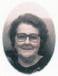
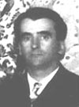

EUGÈNE THÉBERGEfiche familiale
*******************************************************************************
Eugène Thébergedécède à l'âge de 77 ans
Naissance 6 avril 1875
Décès en 1953 à Rouyn-Noranda, cté Témiscamingue
Sépulture au cimetière Notre-Dame de Rouyn-Noranda
Père: François ThébergeMère: Phélonise Roy
Mariage le 25 juillet 1898 à St-Cajetan de Armagh, cté Bellechasse
Épouse: Elmina Beaudoindécède à l'âge de 53 ans
Naissance le 4 mars 1881 à Armagh, cté Bellechasse
Dite "
Mina"
Décès le 24 janvier 1935 à La Sarre, cté Abitibi
Père: Adolphe BeaudoinMère: Sophronie Marceau
*******************************************************************************
Enfant 1 Amanda Thébergedécède à l'âge de 91 ans.
Naissance en 1904
Décès: en 1995 à La Sarre, cté Abitibi
Sépulture au cimetière de La Sarre
Mariage le 16 août 1927 à Notre-Dame de Québec
Conjoint: David Morneaun. en 1902 d. en 1965
Père: Philias MorneauMère: Marie-Alvina Fortin
-------------------------------------------------------------------------------
Enfant 2 Elmina Thébergedécède à l'âge de 83 ans.
Naissance en 1907
Dite "
La-Jeune"
Décès: en 1990 à Rouyn-Noranda, cté Témiscamingue
Sépulture au cimetière Notre-Dame de Rouyn-Noranda
Mariage le 26 oct 1940 à St-André de La Sarre
Conjoint: Émilien Robichaudn. en 1907 d. en 1984
Père: Joseph RobichaudMère: Clarina Bois
-------------------------------------------------------------------------------
Enfant 3 Marie-Anne ThébergeDécès avant 1997
Mariage le 29 nov 1939 à St-André de La Sarre
Conjoint: Georges LambertPère: Désiré LambertMère: Laura Desrochers
-------------------------------------------------------------------------------
Enfant 4 Germaine Thébergedécède à l'âge de 86 ans.
Naissance en 1911
Décès: 20 fév 1997 au Centre-Hospitalier de Rouyn-Noranda, cté Témiscamingue
Sépulture au cimetière Notre-Dame de Rouyn-Noranda
Mariage le 4 sept 1940 à St-André de La Sarre
Conjoint: Josaphat Greniern. en 1905 d. en 1988
Père: Gédéon GrenierMère: Albina Houde
-------------------------------------------------------------------------------
| 

|
Enfant 5 Marie-Ange-Annie Thébergedécède à l'âge de 84 ans. Naissance 3 jan 1918 à St-Philémon, cté Bellechasse Décès le 14 jan 2002 à Rouyn-Noranda, cté Témiscamingue (ses ancêtres)Mariage le 18 sep 1946 à Notr-Dame-de-la Protection de Rouyn-Noranda Conjoint: Gérard Henrin. 6 fév 1912 d. 17 oct 1978 Père: Eugène HenriMère: Graziella Provost(sa famille) |
-------------------------------------------------------------------------------
Enfant 6 Léo-Paul Thébergedécède à l'âge de 57 ans
Naissance en 1920
Dit "
Paulo"
Décès en 1977
Sépulture au cimetière Notre-Dame de Rouyn-Noranda
Mariage le 17 fév 1942 à St-Michel-Archange de Rouyn-Noranda
Conjointe: Georgette TherrienPère: Onésime TherrienMère: Marie Lamoureux
-------------------------------------------------------------------------------
Enfant 7 Fernand Thébergedécède à l'âge de 60 ans
Naissance 2 juin 1923 à St-Philémon, cté Bellechasse
Décès: 31 mai 1934 à Rouyn-Noranda, cté Témiscamingue
Sépulture au cimetière Notre-Dame de Rouyn-Noranda
*******************************************************************************